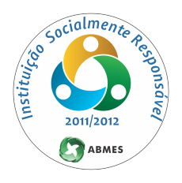
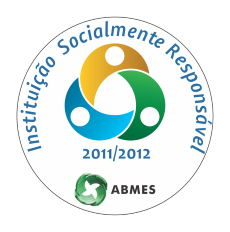
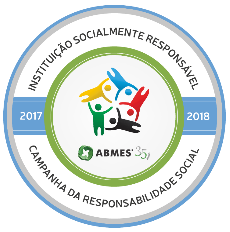
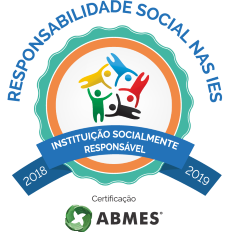
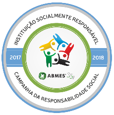
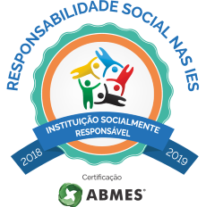
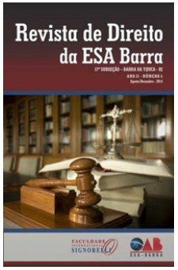
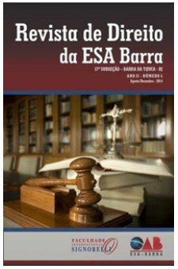

Apresentação
Em 2006, um grupo de professores e demais profissionais liberais, interessados no aspecto cultural e educacional do Rio de Janeiro e de todo o território nacional, uniram-se para fundar a Faculdade Internacional Signorelli - FISIG, esse evento ficou marcado como o primeiro Planejamento Estratégico - PE, que ocorreu na cidade de Cabo Frio, no Rio de Janeiro, no período de 14 a 16 de outubro daquele ano.
Visando a execução do projeto de credenciamento da Faculdade Internacional Signorelli, ainda em 2006, foram adquiridos 2 (dois) prédios: um localizado na Avenida Geremário Dantas nº 1.286, onde fica instalado o Instituto de Gestão Educacional Signorelli, Entidade Mantenedora da Faculdade Internacional Signorelli, e o outro imóvel localizado na Rua Araguaia, nº 3, sede da Instituição.
Dando prosseguimento às metas estabelecidas no PE (2006/2007), já em 2006 foi protocolado o pedido de credenciamento da FISIG (processo: 20060012955 – 14/11/2006), com a oferta de 2 (dois) cursos: Licenciatura em Pedagogia e Bacharelado em Administração. Paralelamente, foi registrado, no Conselho Estadual de Educação do Estado do Rio de Janeiro, o pedido de autorização de funcionamento do Colégio Internacional Signorelli, futuro laboratório das licenciaturas ofertadas.
Em 2009, pela Portaria MEC nº 260, de 24 de março, publicada no Diário Oficial da União, em 25 de março de 2009, Seção 1, página 8, foi credenciada a Faculdade Internacional Signorelli, com a autorização dos cursos solicitados.
No ano de 2010, visando o crescimento institucional e a autorização de mais cursos, foi feita a primeira ampliação do imóvel localizado na Rua Araguaia, n°3, após aquisição de terrenos na redondeza. Dessa forma, a Instituição pôde crescer tanto estruturalmente quanto pedagogicamente.
A partir do crescimento institucional e expertise adquiridos ao longo dos anos, em 2012 foi ofertado, pela primeira vez, o programa de pós-graduação lato sensu na modalidade a distância, com projetos avançados em educação, utilizando tecnologias modernas em Educação a Distância - EaD e estratégias inovadoras.
Mantendo seu crescimento e sua visão inovadora, em 2013, por intermédio da Portaria MEC nº 528, de 12 de junho de 2013, publicada no Diário Oficial da União, do dia 21 de junho de 2013, a Instituição foi credenciada para oferta de cursos de graduação na modalidade EaD. Com esse ato, passou a ter credenciamento pleno, sendo autorizados os cursos de Administração, Pedagogia e de Formação Pedagógica em Pedagogia.
Desde então, o desenvolvimento institucional acontecera gradativamente. No ano de 2015, fora autorizada a oferta do curso de Bacharelado em Direito, sendo um dos poucos cursos aprovados pelo Ministério da Educação - MEC e com maior número de vagas, demonstrando, assim, seriedade e comprometimento institucional com o ensino de excelência.
Em 2017, ocorreu a segunda expansão física da Instituição, com a construção de mais 9 (nove) salas de aula, além de um laboratório de informática e do Centro de Cidadania e Acesso à Justiça Dra. Thelma Fraga (Vide Volume II - Normas de Funcionamento do Centro de Cidadania e Acesso à Justiça Dra. Thelma Fraga). Sempre preocupada com o desenvolvimento social e ambiente sustentável, realizou, ao longo dos anos, diversos projetos sociais, dentre esses:
- Projeto Horta Orgânica – Comunidade da Gardênia Azul: onde diversas crianças aprenderam sobre a importância de zelar pelo ecossistema.
- Projeto Orfanato Santa Rita de Cássia: em que estudantes e professores da Instituição participaram ativamente do projeto social, por meio de aulas de reforço escolar, de dança, de teatro, entre outras.
- Projeto da Casa Emilien Laçay – em parceria com a Cruzada do Menor: no qual estudantes e professores participaram ativamente de atividades escolares para crianças de 2 (dois) a 5 (cinco) anos.
Devido ao seu engajamento social, desde 2010, recebe certificação anual de Instituição Socialmente Responsável pela Associação Brasileira de Mantenedores de Ensino Superior – ABMES.
 



 





Em consonância com a expansão de seu espaço físico, a Instituição espraiou-se pelos campos técnicos e científicos, tendo lançado o seu primeiro periódico científico ainda em 2010.


A Revista possui publicação anual e está em sua décima edição, com artigos escritos a partir dos projetos de pesquisa desenvolvidos pela Instituição, alguns próprios, outros em parcerias com Universidades e Órgãos nacionais e Internacionais, inclusive com a Seccional da OAB/Barra da Tijuca, na qual se lançou uma revista em Direito.


 


Visando o seu crescimento internacional, a partir de 2010, a Instituição firmou uma série de parcerias com Universidades latino americanas e europeias, a saber:
Argentina:
Universidad Nacional de Cuyo – UNCUYO; Universidad FASTA; e Universidad Tecnologica Nacional.
Chile:
Universidad Del Pacifico.
Colômbia:
Fundación Universitária Católica – UNICATOLICA; e Universidad de San Buenaventura.
Espanha:
Ayutamiento de Alcalá de Henares; Universidad Nacional de Educación a Distancia - UNED; e Universidade de Alcalá.
Portugal:
Universidade do Algarve – Portugal; e Universidade de Lisboa – Portugal.
Estados Unidos da América:
Massanutten Military Academy
Fundada e gestada por educadores, sempre teve, por princípio, que o conhecimento não podia cessar. Sendo assim, desde antes de sua autorização, a Instituição sempre proporcionou a todos os seus colaboradores (professores, administrativos, técnicos, gestores, diretores) um Programa de Atualização Continuada – PAC (Vide Volume II - Programa de Atualização Continuada), que ocorre pelo menos 3 vezes ao ano, desde sua criação até os dias atuais.
Hoje, passados 10 (dez) anos do seu credenciamento, a Instituição oferta 13 (treze) cursos superiores na modalidade presencial, a saber:
- Bacharelado em Administração;
- Bacharelado em Ciências Contábeis;
- Bacharelado em Direito;
- Licenciatura em Pedagogia;
- Tecnológico em Análise e Desenvolvimento de Sistemas;
- Tecnológico em Coaching;
- Tecnológico em Comércio Exterior;
- Tecnológico em Gestão da Tecnologia da Informação;
- Tecnológico em Gestão de Recursos Humanos;
- Tecnológico em Processos Gerenciais - Gestão Empresarial;
- Tecnológico em Gestão Financeira;
- Tecnológico em Gestão Pública;
- Tecnológico em Logística.
E 14 (quatorze) cursos superiores e 1 (um) programa na modalidade EaD, ofertados em 54 polos, em junho de 2021:
- Bacharelado em Administração;
- Bacharelado em Ciências Contábeis;
- Formação Pedagógica em Pedagogia.
- Tecnológico em Coaching;
- Tecnológico em Gestão Ambiental;
- Tecnológico em Gestão de Recursos Humanos;
- Tecnológico em Gestão Financeira;
- Tecnológico em Gestão Pública;
- Tecnológico em Logística;
- Tecnológico em Marketing;
- Tecnológico em Processos Gerenciais - Gestão Empresarial;
- Licenciatura em Artes;
- Licenciatura em Matemática;
- Licenciatura em Pedagogia; e
- Segunda Licenciatura em Pedagogia.
| ANO | EVENTO |
|---|---|
2006 |
Primeiro Planejamento Estratégico – Concepção do Projeto Pedagógico de Credenciamento da FISIG |
2006 |
Pedido / Protocolo MEC de Credenciamento Institucional |
2009 |
Pedido / Protocolo MEC de Credenciamento Institucional EaD |
2009 |
Credenciamento Institucional Presencial |
2009 |
Autorização do Curso de Bacharelado em Administração (Presencial) |
2009 |
Autorização do Curso de Licenciatura em Pedagogia (Presencial) |
2011 |
Credenciamento para oferta de Cursos de Pós-graduação EaD |
2013 |
Credenciamento Institucional para oferta de Cursos de Graduação na modalidade EaD |
2013 |
Autorização do Curso de Bacharelado em Administração (EaD) |
2013 |
Autorização do Curso de Licenciatura em Pedagogia (EaD) |
2015 |
Recredenciamento Institucional da Modalidade Presencial |
2015 |
Autorização do Curso Tecnológico em Comércio Exterior (Presencial) |
2015 |
Autorização do Curso de Bacharelado em Direito (Presencial) |
2015 |
Autorização do Curso Tecnológico em Gestão da Tecnologia da Informação (Presencial) |
2015 |
Autorização do Curso Tecnológico em Gestão de Recursos Humanos (Presencial) |
2015 |
Autorização do Curso Tecnológico em Gestão Financeira (Presencial) |
2015 |
Autorização do Curso Tecnológico em Logística (Presencial) |
2016 |
Autorização do Curso Tecnológico em Análise e Desenvolvimento de Sistemas (Presencial) |
2017 |
Autorização do Curso Tecnológico em Logística (EaD) |
2018 |
Autorização do Curso Tecnológico em Gestão de Recursos Humanos (EaD) |
2019 |
Pedido de Recredenciamento Institucional da modalidade Presencial |
2019 |
Recredenciamento Institucional da modalidade a Distância |
2019 |
Autorização do Curso de Licenciatura em Artes (EaD) |
2019 |
Autorização do Curso de Bacharelado em Ciências Contábeis (Presencial) |
2019 |
Autorização do Curso de Bacharelado em Ciências Contábeis (EaD) |
2019 |
Autorização do Curso Tecnológico em Coaching (Presencial) |
2019 |
Autorização do Curso Tecnológico em Coaching (EaD) |
2019 |
Autorização do Curso Tecnológico em Gestão Pública (Presencial) |
2019 |
Autorização do Curso Tecnológico em Gestão Pública (EaD) |
2019 |
Autorização do Curso Tecnológico em Processos Gerenciais – Gestão Empresarial (Presencial) |
2019 |
Autorização do Curso Tecnológico em Processos Gerenciais – Gestão Empresarial (EaD) |
2019 |
Autorização do Curso Tecnológico em Gestão Ambiental (EaD) |
2019 |
Autorização do Curso Tecnológico em Marketing (EaD) |
2019 |
Autorização do Curso de Licenciatura em Matemática (EaD) |
2019 |
Autorização do Curso Tecnológico em Gestão Financeira (EaD) |
2019 |
Pedido / Protocolo MEC de Credenciamento Institucional do Centro Universitário Internacional Signorelli – UNISIGNORELLI |
2021 |
Credenciamento do UNISIGNORELLI - Avaliação INEP Nota 5 |
| INSTITUCIONAL/ CURSO | DURAÇÃO | AUTORIZAÇÃO/ RECONHECIMENTO - ATO/DATA | CONCEITO |
|---|---|---|---|
INSTITUCIONAL |
5 anos |
Portaria Nº 557 - 03/06/2015 |
4 |
EAD |
5 anos |
Portaria Nº 1.734 - 10/10/2019 |
4 |
|
BACHARELADO EM ADMINISTRAÇÃO PRESENCIAL |
4 anos |
Portaria Nº 208 - 25/06/2020 |
4 |
BACHARELADO EM ADMINISTRAÇÃO EAD |
4 anos |
Portaria Nº 214 - 25/06/2020 |
3 |
BACHARELADO EM DIREITO PRESENCIAL |
5 anos |
Portaria Nº 301 - 15/04/2015 |
4 |
|
BACHARELADO EM CIÊNCIAS CONTÁBEIS PRESENCIAL |
4 anos |
Portaria Nº 441 - 21/07/2018 |
Autorizado de Ofício |
|
BACHARELADO EM CIÊNCIAS CONTÁBEIS EAD |
4 anos |
Portaria Nº 337 - 11/07/2019 |
4 |
|
LICENCIATURA EM PEDAGOGIA PRESENCIAL |
4 anos |
Portaria nº 917 - 27/12/2018 |
4 |
|
LICENCIATURA EM PEDAGOGIA EAD/2ª LICENCIATURA EAD |
4 anos |
Portaria nº 913 - 27/12/2018 |
3 |
FORMAÇÃO PEDAGÓGICA (PROFOP) |
1 ano |
Portaria nº 913 - 27/12/2018 |
3 |
LICENCIATURA EM MATEMÁTICA EAD |
4 anos |
Portaria Nº 239 - 27/05/2019 |
4 |
LICENCIATURA EM ARTES EAD |
4 anos |
Portaria Nº 337 - 11/07/2019 |
4 |
|
TECNOLÓGICO EM ANÁLISE E DES. DE SISTEMAS PRESENCIAL |
2,5 anos |
Portaria nº 1181 - 23/06/2020 |
4 |
|
TECNOLÓGICO EM GESTÃO DE TI PRESENCIAL |
2,5 anos |
Portaria Nº 670 - 14/06/2017 |
4 |
|
TECNOLÓGICO EM LOGÍSTICA PRESENCIAL |
2 anos |
Portaria Nº 208 - 25/06/2020 |
4 |
TECNOLÓGICO EM LOGÍSTICA EAD |
2 anos |
Portaria Nº 588 - 09/06/2017 |
4 |
|
TECNOLÓGICO EM GESTÃO DE RH PRESENCIAL |
2 anos |
Portaria Nº 208 - 25/06/2020 |
4 |
TECNOLÓGICO EM GESTÃO DE RH EAD |
2 anos |
Portaria Nº 1.207 - 24/11/2017 |
4 |
TECNOLÓGICO EM COMEX PRESENCIAL |
2 anos |
Portaria Nº 578 - 09/06/2017 |
4 |
|
TECNOLÓGICO EM GESTÃO FINANCEIRA PRESENCIAL |
2 anos |
Portaria Nº 208 - 25/06/2020 |
4 |
|
TECNOLÓGICO EM GESTÃO FINANCEIRA EAD |
2 anos |
Portaria Nº 239 - 27/05/2019 |
4 |
|
TECNOLÓGICO EM PROC. GER. - GESTÃO EMPRESARIAL PRESENCIAL |
2 anos |
Portaria Nº 196 - 22/03/2018 |
Autorizado de Ofício |
|
TECNOLÓGICO EM PROC. GER. - GESTÃO EMPRESARIAL EAD |
2 anos |
Portaria Nº 297 - 25/06/2019 |
4 |
|
TECNOLÓGICO EM GESTÃO AMBIENTAL EAD |
2 anos |
Portaria Nº 787 - 01/11/2018 |
4 |
|
TECNOLÓGICO EM GESTÃO PÚBLICA PRESENCIAL |
2 anos |
Portaria Nº 864 - 06/12/2018 |
Autorizado de Ofício |
TECNOLÓGICO EM GESTÃO PÚBLICA EAD |
2 anos |
Portaria Nº 297 - 25/06/2019 |
4 |
|
TECNOLÓGICO EM COACHING PRESENCIAL |
2 anos |
Portaria Nº 267 - 11/06/2019 |
4 |
TECNOLÓGICO EM COACHING EAD |
2 anos |
Portaria Nº 298 - 25/06/2019 |
4 |
TECNOLÓGICO EM MARKETING EAD |
2 anos |
Portaria Nº 297 - 25/06/2019 |
4 |
Credenciamento do UNISIGNORELLI |
|
|
5 |
1.2. Missão
Oferecer, com excelência nacional e internacional, serviços e produtos educacionais inovadores, nas diferentes modalidades de ensino, que desenvolvam competências e habilidades necessárias à qualificação e preparação de um profissional empreendedor.
1.3. Visão
Ser reconhecida nacional e internacionalmente pela excelência e pioneirismo na criação e na gestão de programas e projetos educacionais e na geração e difusão de conhecimento, nas diferentes modalidades de ensino, com responsabilidade social, ambiental e de autossustentabilidade, desenvolvendo, de forma integral e harmônica, as múltiplas potencialidades dos estudantes, preparando-os para serem profissionais empreendedores.
1.4. Valores Institucionais
- Humanismo cristão;
- ética e justiça;
- respeito à vida e ao meio ambiente;
- respeito à individualidade;
- aprendizagem e desenvolvimento de pessoas;
- pioneirismo e busca contínua das fronteiras do conhecimento;
- transparência nas relações com clientes, parceiros, colaboradores e sociedade; e
- compromisso com a qualidade e com resultados voltados para o bem comum.
1.5. Finalidades
- Promover a educação e o ensino superior como forma de autoaperfeiçoamento e de qualificação permanente do ser humano;
- oferecer cursos de nível superior que contemplem as exigências do desenvolvimento local, regional, nacional e internacional, baseado nos requisitos de democratização de acesso, de flexibilidade e de integração nas diferentes modalidades de ensino;
- divulgar os conhecimentos culturais, científicos e técnicos que constituem o patrimônio da humanidade;
- propiciar o desenvolvimento do espírito científico, do pensamento reflexivo e da criação cultural; e
- estender os resultados das pesquisas e das atividades de criação gerados na Instituição à comunidade, mediante cursos, publicações e serviços especiais.
1.6. Objetivos
- Formar profissionais em nível superior, nas modalidades presencial e a distância das diferentes áreas do conhecimento, aptos à inserção em setores produtivos e à participação ativa no desenvolvimento da sociedade brasileira;
- oferecer oportunidades de aperfeiçoamento, de especialização e de formação continuada;
- proporcionar formação para o exercício do magistério e da prática pedagógica em todos os seus aspectos e dimensões, sob a perspectiva de educação continuada;
- garantir o domínio de métodos, de técnicas e de recursos tecnológicos indispensáveis ao desempenho da profissão na pós- modernidade; e
- ofertar cursos e programas nas diferentes modalidades de ensino, e estabelecer relações educacionais com instituições no exterior visando à realização de um programa de intercâmbio permanente de estudantes.
1.7. Princípios
Gerais
São Princípios Gerais norteadores das ações pedagógicas:
- Equidade: aduz-se que, diante das diferenças individuais e socioculturais entre os discentes, é dever institucional promover condições igualitárias de acesso ao ensino e à inserção profissional;
- relevância: refere-se ao compromisso com a qualidade formal e técnica do conhecimento, no que concerne ao desenvolvimento da habilidade de manejar meios, instrumentos e procedimentos diante dos desafios sociopolíticos e econômicos. Ademais, diz respeito à capacidade de formar sujeitos críticos que, ao progredir e ao construir a própria história, possam atuar como agentes transformadores da realidade. Nesse sentido, define-se, sobretudo, pela vontade de tornar-se uma Instituição de excelência nos serviços prestados, necessária e indispensável ao desenvolvimento regional;
- pertinência: compreende-se como obrigação institucional de engajar-se, solidaria e participativamente, do esforço de identificar e de solucionar os problemas relativos ao progresso e ao desenvolvimento das comunidades;
- efetividade: traduz-se como esforço institucional de responder, com eficiência, às demandas sociais, atendendo-as pronta e plenamente;
- gestão democrática: entende-se como ampla oportunidade de participação de representantes, dos diferentes segmentos da Instituição e da comunidade ao entorno, no pensar pedagógico e administrativo;
- liberdade: parte-se da premissa inconteste de que todas as ações devem ser norteadas pela ideia de autonomia-reflexiva – acerca do aprender, do ensinar, do pesquisar – e pela divulgação do saber, sendo essa última compreendida como produção coletiva; e
- valorização do magistério: trata-se do reconhecimento do trabalho desenvolvido pelos profissionais da educação, em consonância com a oportunidade de sua formação continuada, condição necessária e imprescindível para formação do profissional desejado.
Filosófico
Esses princípios orientam a formação política e ética do estudante, visualizando o futuro profissional como ser social, politicamente comprometido e sujeito construtor da própria história. Para isso, a Instituição supera a aprendizagem dogmática e mecânica, na medida em que direciona seus esforços à formação científica, crítica e criativa, por intermédio de buscas coletivas e da valorização do esforço individual.
Metodológicos
Ao optar por se constituir em uma Instituição dedicada às modalidades de ensino previstas pela legislação, a Instituição fundamenta a questão metodológica do ensino na interação professor/estudante. Os temas são apresentados a partir de questões problematizadoras e desafiadoras relacionadas com os conhecimentos prévios e com as experiências dos estudantes.
As situações questionadoras proporcionam aos estudantes: observar, descrever, relatar, dialogar, ler, escrever, comparar, identificar, diferenciar, analisar, sintetizar, deduzir, concluir, julgar, avaliar, propor e comparar hipóteses. Os procedimentos educativos adotados têm a preocupação de possibilitar a apreensão dos conteúdos trabalhados na perspectiva da unidade entre teoria, prática e interdisciplinaridade.
A interação entre estudante/professor e estudante/estudante é ponto crucial no processo de ensino-aprendizagem. O trabalho de parceria cognitiva é valorizado elaborando-se situações pedagógicas em que as diversas linguagens estão presentes. Essas são, na verdade, instrumentos fundamentais de mediação, ferramentas reguladoras da própria atividade e do pensamento dos sujeitos envolvidos.
Essa troca constante é necessária para dar suporte metodológico claro, oportunizando melhor construção dos conhecimentos, e, fundamentalmente, oferecendo suporte às exigências da vida social, facilitando a caminhada, estimulando, encontrando formas incentivacionais que possibilitem superar as dificuldades de fazer com que os estudantes não se sintam isolados, mas parte de um grupo, de uma instituição.
Pretende-se que o ensino, em qualquer modalidade, seja participativo e adequado à realidade do aprendiz por meio do diálogo e de práticas críticas e criativas que favoreçam atitude investigativa, além de proporcionar momentos de comunicação e de expressão e que, igualmente, sejam lúdicos e prazerosos.
Constituem-se, como referenciais adotados, os seguintes aspectos:
- Ético-políticos: manifestam-se na forma como são trabalhadas as noções de cidadania e os valores democráticos e sociais que concorrem para a formação de indivíduos críticos, capazes de compreender contextos histórico-culturais e de transformá-los;
- epistemológico-educacionais: referem-se à construção de um processo de ensino-aprendizagem participativo, com espaço para ideias e opiniões divergentes; o papel do professor é reflexivo e desafiador, e o estudante será estimulado a ser coautor do processo de construção do conhecimento. Nesse sentido, a relação de conhecimento entre professores e estudantes será recíproca, de mútua compreensão e de desafios constantes, e não de dominação; e
- técnicos: dizem respeito ao uso de recursos e de novas tecnologias que facilitem a aprendizagem e a aquisição da autonomia por parte do estudante; revela-se no uso de procedimentos didáticos atualizados e na utilização de outros ambientes educacionais fora do âmbito escolar.
1.8. Metas
As principais metas institucionais, estabelecidas para o período 2017/2021, representam a operacionalização dos objetivos constantes do PDI e constituem parâmetros funcionais para avaliação da efetividade do planejamento. Alinhadas à missão, aos objetivos e aos valores estabelecidos, estão distribuídas em todas as dimensões estruturantes do projeto e foram elaboradas a partir dos desdobramentos naturais das políticas institucionais.
A seguir, são apresentados quadros, que demonstram as metas institucionais e as de implantação de cursos novos, estabelecidos no PDI vigente.
| METAS INSTITUCIONAIS - PDI 2017-2021 | ||
|---|---|---|
| DESCRIÇÃO | OBJETIVO | PRAZO |
| Expansão da oferta de cursos de pós-graduação em nível de especialização, na modalidade a distância | Ofertar novos cursos de pós-graduação em nível de especialização, na modalidade a distância. | 2017/21 |
| Aperfeiçoamento da Plataforma Educacional – PRISMA/SIGNORELLI | Aperfeiçoar constantemente a Plataforma Educacional – PRISMA/SIGNORELLI, adequando às novas tecnologias, ferramentas e avanços tecnológicos. | 2017/21 |
| Atualização e capacitação de toda a equipe pedagógica e técnico- administrativa | Promover a qualificação, a atualização e o aperfeiçoamento dos corpos docente e técnico-administrativo-pedagógico, de forma contínua e permanente. | 2017/21 |
| Abertura de novos polos EaD | Abrir novos polos visando ao desenvolvimento institucional em função das metas estabelecidas no PDI. | 2017/21 |
| Desenvolvimento do programa de avaliação institucional | Aperfeiçoar o processo de avaliação e autoavaliação com vistas ao aprimoramento acadêmico e administrativo. | 2017/21 |
| Atualização de material didático institucional | Atualizar material didático da graduação e pós-graduação. | 2017/21 |
| Aprimoramento do Programa de Internacionalização | Aprimorar o Programa de Internacionalização com a celebração de novos convênios e a implementação de novas estratégias. | 2017/21 |
| Atualização e ampliação do acervo da Biblioteca Waldyr Lima de acordo com os novos cursos previstos no PDI | Atualizar e ampliar o acervo da Biblioteca Waldyr Lima de acordo com os novos cursos previstos no PDI. | 2017/21 |
| Atualização e ampliação do parque tecnológico da FISIG | Atualizar e ampliar o parque tecnológico da FISIG em função da implantação de novos cursos e programas. | 2017/21 |
| Aumento do incentivo da produção acadêmica científica dos docentes e discentes visando a divulgação dos conhecimentos | Aumentar o incentivo da produção acadêmica científica dos docentes e discentes visando a produção e a divulgação dos conhecimentos. | 2017/21 |
| Oferta de novas atividades de extensão voltadas ao atendimento de necessidades e interesses da comunidade interna e externa da FISIG | Ofertar novas atividades de extensão voltadas ao atendimento de necessidades e interesses da comunidade interna e externa da FISIG. | 2017/21 |
| Construção de novas instalações físicas para ampliação da IES | Iniciar a construção da Unidade Ladeira da Freguesia, Rio de Janeiro – RJ, destinada à implantação dos cursos da área de saúde. | 2020 |
| Revisão dos projetos pedagógicos dos cursos de graduação | Revisar os projetos pedagógicos dos cursos de graduação. | 2021 |
| Aumento do número de colaboradores – Técnicos Administrativos | Aumentar o número de colaboradores da Instituição de 31 para 47 para suprir as novas demandas institucionais no período 2017/2021. | Até 2021 |
| Curso / Colaboradores | IMPLANTAÇÃO / CURSOS | |||||||||
|---|---|---|---|---|---|---|---|---|---|---|
| 2017 | 2018 | 2019 | 2020 | 2021 | ||||||
| Pres | EAD | Pres | EAD | Pres | EAD | Pres | EAD | Pres | EAD | |
| Gestão da Tecnologia da Informação | x | |||||||||
| Gestão Financeira | x | |||||||||
| Gestão Ambiental | x | |||||||||
| Processos Gerenciais - Gestão Empresarial | x | x | ||||||||
| Ciências Contábeis | x | x | ||||||||
| Gestão Pública | x | x | ||||||||
| Coaching | x | x | ||||||||
| Marketing | x | |||||||||
| Matemática | x | |||||||||
| Artes | x | |||||||||
| Direito | x | |||||||||
| Gestão da Segurança Pública | x | |||||||||
| Ciência Econômica | x | |||||||||
| Serviço Social | x | |||||||||
| Comunicação Social - Jornalismo | x | |||||||||
| Técnico em Administração | x | |||||||||
| Técnico em Contabilidade | x | |||||||||
| Técnico em Finanças | x | |||||||||
| Técnico em Recursos Humanos | x | |||||||||
| Técnico em Serviços Públicos | x | |||||||||
| Técnico em Serviços Jurídicos | x | |||||||||
| Técnico em Logística | x | |||||||||
| Técnico em Marketing | x | |||||||||
| Técnico em Publicidade | x | |||||||||
| Técnico em Multimeios Didáticos | x | |||||||||
| Corpo Docente | ||||||||||
| Corpo de Tutores | ||||||||||
| Corpo Técnico Administrativo | 31 | 35 | 39 | 43 | 47 | |||||
1.9. Experiência da Instituição na oferta de cursos na modalidade EaD
A educação a distância situa-se, no PDI da FISIG, ao lado de outros três pilares de atuação, quais sejam: formação profissional de qualidade, educação para o trabalho e internacionalização.
Os cenários social, tecnológico, político e econômico têm sofrido grandes mudanças promovendo o surgimento de novas atividades, ao mesmo tempo em que outras funções desaparecem ou são transformadas. O crescimento exponencial do volume de informação, a geração de novos produtos, o advento de novas teorias ou a nova aplicação de teorias já largamente conhecidas, têm acarretado constantes reavaliações do processo de trabalho e incrementado a competição global.
A tecnologia muda rapidamente e força uma dramática redução no tempo decorrido entre o surgimento de uma inovação e sua entrada no mercado e as associações surgem, então, como uma das alternativas viáveis para a problemática da mudança acelerada, das dificuldades de acompanhamento desse processo e da globalização dos mercados.
Portanto, os conceitos-chave dessa nova era são a colaboração/cooperação entre os sujeitos e a comunicação virtual, eliminando distâncias, aproximando as pessoas e aumentando a produtividade através de métodos cooperativos de trabalho virtual.
Cabe às Instituições de Ensino forjar um novo sujeito e, para tanto, precisam se reorganizar e adotar um novo paradigma com metodologias, técnicas e recursos diferentes dos tradicionalmente aceitos, já agora superados em decorrência das exigências da nova ordem mundial.
Dentro do quadro descrito, uma das alternativas é trabalhar com EaD, não só pelas razões que sempre a justificaram, mas, também, porque o ritmo acelerado de mudanças sociais, políticas, econômicas, culturais, educacionais passa a exigir uma educação continuada de todos os sujeitos.
Nessa nova sociedade do conhecimento, a EaD apresenta as possibilidades de:
- Atualização de informações em todas as áreas, impedindo que as defasagens aumentem;
- desenvolvimento de novas habilidades para uma mesma profissão cujas atividades variam e se transformam rapidamente; e
- aperfeiçoamento de competências que permitam a troca de uma profissão para outras emergentes, no curso da vida.
Além das razões explicitadas acima, outros motivos levaram a Instituição à inclusão dessa modalidade de ensino no seu projeto pedagógico, tais como as possibilidades de:
- Atender a uma população estudantil dispersa geograficamente e, em particular, àquela que se encontra em zonas periféricas, que não dispõem das redes das instituições convencionais;
- utilizar mecanismos de comunicação múltipla, que permitem enriquecer os recursos de aprendizagem e eliminar a dependência do ensino face a face;
- garantir a permanência do estudante em seu meio cultural e natural com o que se evitam os êxodos que incidem no desenvolvimento regional;
- melhorar a qualidade do ensino e dos materiais didáticos; alcançar níveis de custos decrescentes, já que permite ampla margem de expansão; e atuar com eficácia e eficiência na atenção de necessidades conjunturais da sociedade, sem separação dos usuários de seus campos de atuação.
Para o cumprimento de sua missão de oferecer, nacional e internacionalmente, serviços e produtos educacionais inovadores e de excelência, nas diferentes modalidades de ensino, que desenvolvam competências e habilidades necessárias à qualificação e preparação de um profissional empreendedor, a Instituição define seus fins, objetivos, políticas e estratégias, e considera, no que diz respeito à modalidade de educação a distância, as seguintes vertentes:
- A implantação de uma nova cultura educacional, comprometida com a formação do educando em múltiplas linguagens, com a ampliação dos espaços educacionais e dos domínios do conhecimento;
- o desenvolvimento de uma cultura institucional favorável à incorporação da aprendizagem aberta, a distância e continuada;
- a disseminação de programas, conhecimentos e tecnologia aplicada à educação a distância, para a melhoria da qualidade e ampliação das possibilidades de acesso ao ensino superior;
- o aprimoramento da qualidade do ensino básico e superior presencial, incorporando a esses recursos pedagógicos e tecnológicos próprios da educação a distância;
- a realização de cursos na modalidade de educação a distância para os diversos segmentos da sociedade que necessitam de informação e formação para atuarem no mercado de trabalho em nível de extensão, graduação e pós-graduação;
- a apresentação de novas alternativas de formação e capacitação profissional, propiciando o acesso à educação universitária a todas as regiões do país;
- a democratização do conhecimento científico, tornando-o acessível para as diferentes camadas sociais;
- a emancipação coletiva, pelas oportunidades de acesso ao saber acadêmico, e redução das desigualdades sociais; e
- a aceleração do desenvolvimento humano, individual e coletivo, reduzindo o nível de desqualificação profissional e favorecendo a melhoria da qualidade de vida a uma maior parcela da população.
Como a função básica da Instituição é lidar com a produção e transmissão do conhecimento, sua preocupação permanente é buscar e
desenvolver formas que propiciem aos estudantes as melhores condições para apropriação, incorporação e elaboração desse conhecimento. O Programa de EaD, portanto, pauta-se no processo de construção/reconstrução do conhecimento.
Considerando, ainda, que o conhecimento é produto de práticas coletivas, envolvendo séries de ações transformadoras que resultam cada uma delas, em novos saberes e que se transforma até resultar no produto que circula na escola - o conhecimento -, concebe-se a educação a distância não apenas como um espaço de veiculação desse saber, mas também como um espaço propício à produção coletiva.
Observando, também, que a construção do conhecimento exige a ativa participação de todos, estudantes e professores, entende-se que esse processo estará sempre sujeito às contradições que surgem quando se contrapõe o conhecimento científico aos conhecimentos empíricos, extraídos da experiência cotidiana.
A partir dessas premissas, pretende-se que os cursos a distância ministrados pela Instituição:
- Desenvolvam o espírito crítico e propiciem a plena formação, contribuindo efetivamente para que o estudante possa exercer sua individualidade, autonomia e liberdade;
- sejam diversificados de modo a atender aptidões e vocações, interesses e necessidades culturais, maximizando as potencialidades dos estudantes;
- deem suporte à formação profissional, atendendo às legítimas aspirações em relação ao exercício de uma profissão;
- atendam à necessidade de educação continuada, favorecendo, de forma permanente, a integração do estudante à sociedade em constante transformação;
- sustentem-se na realidade, de forma que, a partir do conhecimento e da compreensão do meio o estudante possa intervir nele de forma consciente e efetiva;
- desenvolvam no estudante a mentalidade científica, de forma que ele possa assumir postura investigativa e interventiva frente aos fenômenos;
- disponibilizem atividades que propiciem o desenvolvimento do espírito de grupo, de forma que os estudantes possam atuar cooperativamente em torno de objetivos comuns; e
- estendam-se à comunidade, criando efetivamente condições para o exercício pleno da cidadania.
Para garantir qualidade e excelência, os processos educativos partem, portanto, dos seguintes pressupostos da educação a distância:
- Orientação pela noção de indissociabilidade entre ensino-pesquisa- extensão e entre teoria-prática;
- saber entendido como resultado de construção coletiva e o professor visto como facilitador/moderador da aprendizagem;
- modelo educativo organizado, onde o estudante desempenha o papel de sujeito ativo, que constrói/reconstrói o conhecimento pela própria experiência;
- estratégias de aprendizagem direcionadas para aliança entre o mundo do trabalho e os processos de formação profissional, possibilitando a educação continuada e permanente em todos os níveis e processos educativos;
- objetivos da formação profissional orientados pela noção de competência;
- interação com materiais didáticos especialmente elaborados e veiculados em conformidade com argumentos pedagógicos;
- apoio docente à disposição do estudante para junto com ele ressignificar os conteúdos, aproximando-os das suas experiências concretas, de seus acúmulos teóricos e práticos, e dos desafios com que se defronta em seu cotidiano; e
- incorporação de estratégias de comunicação alicerçadas em um sólido modelo pedagógico que garantam o espaço de interação entre tutor e estudante e considerem as condições de acessibilidade e adaptabilidade dos estudantes.
1.10. Inserção Social
Desde a sua fundação, a Instituição estimula a inserção social de seus estudantes e o exercício pleno da cidadania. Para além do conteúdo programático, professores de diversas áreas do conhecimento aproveitam o espaço de ensino-aprendizagem para abordar temas que atendam às necessidades da região, de modo a fomentar melhorias continuas no seu entorno. Para melhor compreender as estratégias de inserção social, faz-se necessário ter uma visão abrangente, que contemple os seguintes aspectos: regional e local; econômico; ambiental e educacional.
Regional e local
Situado da região Sudeste, o Estado do Rio de Janeiro faz fronteira com: Minas Gerais (norte e noroeste), Espírito Santo (nordeste) e São Paulo (sudoeste), e com o Oceano Atlântico (leste e sul). No quesito territorial, ocupa área de 43.696,054 Km², sendo pouco maior que o país da Dinamarca.
Apesar de ser, efetivamente, o terceiro menor estado do Brasil (à frente apenas dos estados de Alagoas e de Sergipe, respectivamente, em segundo e primeiro lugar), concentra 8,4% da população do país, figurando, consequentemente, como o estado com maior densidade demográfica.
Segunda maior metrópole brasileira, apenas depois de São Paulo, o Rio de Janeiro é uma das 27 unidades federativas do país. De acordo com os dados do último Censo1, o Rio de Janeiro é o terceiro estado mais populoso do Brasil, cujos municípios com maior densidade demográfica são: Rio de Janeiro, São Gonçalo, Duque de Caxias, Nova Iguaçu, Belfort Roxo, Niterói, São João de Meriti, Campos dos Goytacazes; todos esses com população acima de 150 mil habitantes.
Por suas belezas naturais e clima cultural, a capital fluminense é internacionalmente conhecida como a Cidade Maravilhosa. Cosmopolita, é a maior rota do turismo internacional do Brasil, e principal destino turístico na América Latina e em todo o Hemisfério Sul, funcionando como um “espelho” ou “retrato” nacional.
Localizado na terra do Cristo Redentor, tem suas instalações na Região Administrativa de Jacarepaguá, que compreende os bairros do Anil, da Curicica, da Gardênia Azul, de Jacarepaguá, do Pechincha, da Praça Seca, do Tanque, da Taquara, de Vila Valqueire e da Freguesia, sendo este último sede da Instituição – na Rua Araguaia, nº 3.
No que concerne à mobilidade urbana, o bairro da Freguesia pode ser acessado pela Linha Amarela, uma das principais vias da capital, que se conecta à Linha Vermelha pela Transcarioca, pelo BRT e pela Estrada Grajaú- Jacarepaguá.
Sua localização privilegiada permite oferecer cursos e programas aos habitantes dos bairros vizinhos, a exemplo da Barra da Tijuca e do Recreio dos Bandeirantes, além de atender às demandas sociais das comunidades ao redor e dos polos de desenvolvimento, de toda a capital do Estado do Rio de Janeiro e de suas cidades periféricas.
Do ponto de vista orçamentário, a demanda por cursos de graduação ratifica a escolha acertada, da Entidade Mantenedora, em lograr na Freguesia de Jacarepaguá, conforme os dados obtidos pelo Instituto Pereira Passos - IPP/Rio de Janeiro/2020, o bairro abriga 572.617 mil habitantes, cerca de 9% da população do Município, dentre os quais 101.316 mil são jovens, na faixa de 20 a 29 anos de idade.
Nesse sentido, a Instituição tem contribuído ao longo dos anos com o desenvolvimento de capital humano de qualidade e excelência, atendendo não
somente à Zona Oeste da cidade, mas também a munícipios próximos, tais como: Duque de Caxias, Nova Iguaçu, entre outros. Investe, assim, na expansão do ensino de graduação e de pós- graduação, procurando atender novas demandas regionais, nacionais e internacionais, como também, em atividades de pesquisa e de extensão alicerçadas em parcerias, com os setores públicos e privados, de modo a afirmar o compromisso social da Instituição em sua região de inserção.
Econômico
A economia do Rio de Janeiro tem como principal atividade o setor industrial, aproximadamente 46% do Produto Interno Bruto - PIB do estado é proveniente dessa atividade. Apenas 0,7% do PIB do Rio de Janeiro é oriundo da agricultura. O comércio e os serviços são responsáveis por 53,3%. Os setores mais dinâmicos são: químico, metalúrgico, siderúrgico, material eletrônico, farmacêutico e construção civil.
A economia do Estado é diversificada, o parque industrial é composto por indústrias metalúrgicas, siderúrgicas, químicas, de alimentos, mecânicas, editorial e de celulose. É um dos principais centros econômicos, culturais e financeiros do país, sendo internacionalmente conhecido por diversos ícones culturais e paisagísticos como o Pão de Açúcar, o morro do Corcovado e o Cristo Redentor, as praias dos bairros de Copacabana, Ipanema e Barra da Tijuca (entre outros), o Estádio do Maracanã, o Teatro Municipal do Rio de Janeiro, as florestas da Tijuca e da Pedra Branca, a Quinta da Boa Vista, a Biblioteca Nacional, o Carnaval Carioca, a Bossa Nova, o Samba e o Réveillon de Copacabana.
É sede das duas maiores empresas brasileiras (Petrobras e Vale) e das principais companhias de petróleo e telefonia do Brasil, além do maior conglomerado de empresas de mídia e comunicação da América Latina, as Organizações Globo, localizado na região de Jacarepaguá. Contemplado por grande número de Universidades e Institutos, é o segundo maior polo de pesquisa e de desenvolvimento do Brasil, responsável por 19% da população científica nacional, segundo dados do Censo de 2018.
Ambiental
A região de Jacarepaguá possui duas grandes áreas distintas: a primeira, constituída pelos afluentes da Lagoa da Barra, do Camorim e de Marapendi, conectados entre si por seus canais, forma o complexo lagunar da Barra da Tijuca. As águas do complexo se encontram com o oceano Atlântico através do Canal da Joatinga. Ao todo, são 10 (dez) ilhas, sendo que a maior é da Gigoia, com 3.000 moradores, hostels, pousadas e restaurantes.
Já a segunda grande área é rodeada de montanhas, como o Parque Estadual da Pedra Branca, uma bela unidade de conservação ambiental, considerada uma das maiores florestas urbanas do mundo, com 12.500 hectares de extensão.
O parque é encoberto por vegetação típica da Mata Atlântica (cedros, jacarandás, jequitibás e ipês), que serve de abrigo a uma generosa fauna composta por onça parda, jaguatiricas, preguiças-de-coleira, tamanduás-mirins, pacas, tatus, teiús, cuandus, tucanos, jacus e cutias.
Além do variado patrimônio natural, o Rio de Janeiro dispõe de algumas construções de interesse cultural, como um dos antigos aquedutos, represas, ruínas de sedes de antigas fazendas e pórtico. Nas cercanias do Núcleo Pau da Fome, encontra-se o Museu Bispo do Rosário Arte Contemporânea, situado na Colônia Juliano Moreira. No Núcleo Piraquara, no bairro do Realengo, encontra-se a casa da antiga sede da Fazenda Piraquara, datada do Século XVIII, e o Aqueduto Veiga Brito, da década de 1960, que ainda abastece grande parte da Cidade do Rio de Janeiro.
Educacionais
Em relação à educação básica, conforme dados do Instituto Nacional de Estudos e Pesquisas Educacionais Anísio Teixeira – INEP do Censo 2019, o Rio de Janeiro apresenta um total de 2.233.437 matrículas no ensino fundamental, 603.057 matrículas no ensino médio, 111.025 na educação profissional, 195.790 e 120.800 no ensino fundamental e médio, respectivamente, para jovens e adultos. A Região Administrativa de Jacarepaguá está classificada como de alto desenvolvimento humano, ocupando a 12ª posição no ranking das Regiões Administrativas do Município do Rio de Janeiro, conforme critério do Índice de Desenvolvimento Humano - IDH e apresenta, segundo o IPP, os seguintes indicadores de escolarização da população:
| EDUCAÇÃO BÁSICA | |
|---|---|
| NÍVEL DE ENSINO | MATRÍCULAS |
| Ensino infantil | 619.058 |
| Ensino fundamental | 2.003.315 |
| Ensino médio | 572.899 |
| Taxa média de alfabetização | 97,9% |
|---|---|
| Média de anos estudados | 9,3 anos |
Esses índices também corroboram a ideia de que existe demanda para a implantação de cursos superiores na região, dado o expressivo número de estudantes matriculados no ensino médio.
1.11. Dados da Entidade Mantenedora e da Mantida
1.11.1. Entidade Mantenedora – IGES
Nome: Instituto de Gestão Educacional Signorelli Ltda. - IGES
Endereço: Avenida Gerstrongário Dantas, 1286 – Jacarepaguá- Freguesia – Rio de Janeiro – RJ CEP 22760-401 – Tel/Fax: (21) 3312-3000
Endereço eletrônico: www.signorelli.edu.br
Sede e foro: Município do Rio de Janeiro - RJ
Natureza: Pessoa jurídica de Direito Privado, com fins lucrativos
Inscrição no CNPJ: nº. 07.436.988/0001-85
Contrato social: Registrado no RCPJ/RJ sob o n.º 214211, em 06/06/2005
1.11.2. Entidade Mantida - FISIG
Nome: Faculdade Inernacional Signorelli
Endereço: Rua Araguaia, 03 – Freguesia – Jacarepaguá – Rio de Janeiro – RJ – CEP 22760-041
Endereço eletrônico: www.faculdadesignorelli.com.br
Tel/Fax: 3312 3000
Limite territorial de atuação: Município do Rio de Janeiro, Estado do Rio de Janeiro.
Inscrição no CNPJ: nº. 07.436.988/0001-85
Natureza: Estabelecimento isolado e particular de ensino superior
Credenciamento/Presencial: Portaria MEC nº. 260, de 24 de março de 2009, publicada no dia 25 de março de 2009, no Diário Oficial da União, Seção 1, página 8.
Recredenciamento/Presencial: Portaria MEC nº. 557, de 3 de junho de 2015, publicada no dia 5 de junho de 2015, no Diário Oficial da União, nº 105 Seção 1 página 17.
Credenciamento pleno/EaD: Portaria MEC nº. 528, de 12 de junho de 2013, publicada no dia 14 de junho de 2013, no Diário Oficial da União, nº 113 Seção 1 página 15.
Recredenciamento pleno/EaD: Portaria MEC nº. 1.734, de 10 de outubro de 2019, publicada no dia 11 de outubro de 2019, no Diário Oficial da União, nº 198 página 27.
1.12. Atos Constitutivos: Regimento e Contrato Social
A Instituição rege-se pela legislação e normas aplicáveis ao sistema federal de ensino, pelo Regimento Geral e pelo Contrato Social da Entidade Mantenedora, cujos documentos estão nos Anexos I e II.
1.13. Natureza Jurídica
O Instituto de Gestão Educacional Signorelli – IGES, Entidade Mantenedora, é uma organização com fins lucrativos, cuja natureza jurídica é de uma Sociedade Simples Limitada. Sua atividade social prevê a oferta e ministério de cursos e programas de ensino fundamental e médio, de educação de jovens e adultos em nível fundamental e médio, de educação profissional em nível técnico, de graduação e de pós-graduação, pesquisa e realização de exames de suplência do ensino fundamental e médio.
Para o quinquênio compreendido no PDI, referente ao período 2017/2021, o IGES conta com Planejamento Estratégico suportado por um criterioso estudo econômico e financeiro, adotando procedimentos financeiros sustentados por instrumentos orçamentários para encaixes e desencaixes e por demonstração dos fluxos de caixa histórico e projetado. Também apoiam o sistema decisorial os relatórios societários elaborados por sua equipe de contabilidade.
As demonstrações financeiras são elaboradas, de acordo com os princípios fundamentais de contabilidade e são suportados por sistemas de controles internos adequados e por pessoal habilitado para tal função. A equipe financeira do Instituto de Gestão Educacional Signorelli é formada por profissionais com alta qualificação como Mestre em Contabilidade, Bacharéis em Ciências Contábeis, Técnicos em Contabilidade, Tecnólogo em Redes de Computadores, Graduados em Matemática e Graduandos em Administração de Empresas.
Especificamente sobre o planejamento econômico e financeiro para a oferta e ministério de cursos e programas, são adotados os seguintes procedimentos:
- Projeção quantitativa de admissão de estudantes;
- projeção dos custos dos serviços prestados;
- projeção dos fluxos de caixa operacional de investimento e de financiamento; e
- projeção do EBTIDA e do lucro líquido.